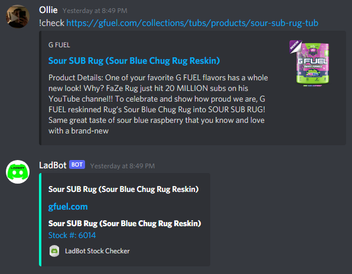
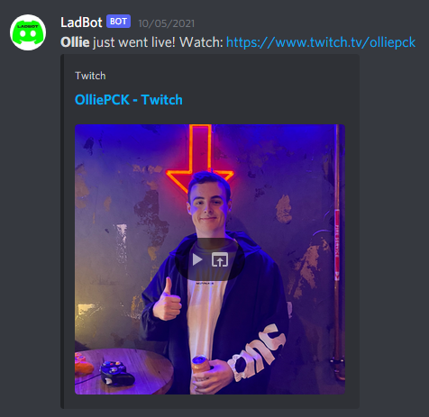
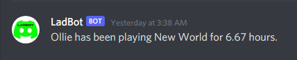
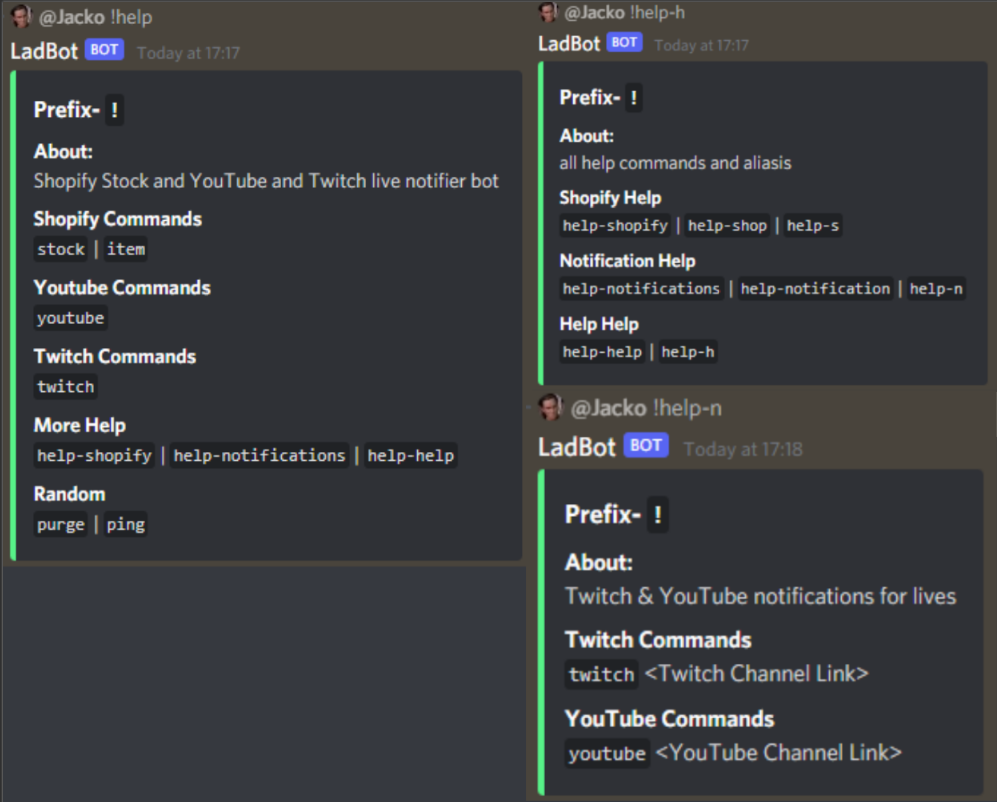

LadBot
Your friendly Discord companion!
This website will keep you posted with our team, our ideas and whats to come!

Your friendly Discord companion!
This website will keep you posted with our team, our ideas and whats to come!
Learn about how LadBot emerged, and a bit about the development team.
LadBot is a Discord bot that reduces the need for multiple bots within a discord server. The LadBot will be built around a unique feature, this feature checks Shopify for the stock numbers and returns add-to-cart links for all users in the server. The bot will also notify other users whenever a user in the Discord server goes live on Twitch or YouTube. LadBot will also be able to check registered YouTube channels for new videos and publish notifications for everyone in the server. This website will be used to assist users with the installation of the bot and to keep users up to date with our progress and future ideas.
Part of the Help Command Coding team. I have lots of interests of the entire technology spectrum. I have made games and basic programs and making a discord bot has always been on my list of things to do. I am extremely interested in learning the proper means of the language and procedures of hosting a discord bot, the more I know the better.
Part of the Shopify Coding team. I’m interested in making a Discord bot to assist gamers in purchasing products. I have been using Discord since 2015 and am aware of its limitations and benefits as a bot platform. I have experience using NodeJS to make simple Discord bots for my own server which I use daily. I am interested in expanding on my current knowledge to make a Discord bot that can be used in other people's servers for free.
Part of the Web Programming team. I’ve been a long-term user of Discord for online communication, primary for video calling, sharing content and calls during games. I’ve been involved in many servers that utilized discord bots with various features, this has increased my curiosity within how bots' function. My current understanding on this process is very minimal but I’m keen to gather an understanding.
Part of the Twitch Notification team. I have had used discord bots before and has made one in a smaller scale. I am quite interested in this project to further expand my knowledge upon making discord bots, as well as furthering my knowledge upon JavaScript.
Part of the Web Programming team. I use Discord as a communication tool in my own personal life, such as playing games or video calling friends. Hence, the idea of making a bot for this application heavily appealed to me. However, currently my knowledge as to how to program a Discord bot is very limited, so I look forward to researching how to code one. I also am interested to see how useful the bot will be in my general use of Discord normally.
LadBot is full of useful features, with the intention to not require a bunch of different bots in one server.
The Shopify feature works by checking stock numbers and returns add-to-cart links for all the users in the server.
The bot will notify other users whenever a user in the Discord server goes live on Twitch or YouTube. It will also check registered YouTube channels for new videos and publish notifications for everyone in the server.
If a member of the server has been playing a game for over 6 hours, the bot will send a message letting everyone know who has been grinding!
The help command aims to help the user navigate the bot. Through subcategories for Shopify, Notifications and Help the user should know all they need to utilise the bots commands.
Looking to the future of LadBot, the team would like to take the Bot to a direction where it is go to bot for all Discord users and servers.
Although Copyright restrictions right now are causing an issue to create a music player in the bot, it will be resolved and implemented in the new future.
We will be including a way for users to choose their role by reacting. This system will require the user to react with a certain reaction, this will ultimately automatically put them into that role.
A level system where users can gain XP and climb the servers leaderboard. XP will be gained by how active the user is, this can be in chat or voice channels.
Automated messaging system to newcomers to your server. A message can be set that automatically messages the user in their private direct messages
You will be able to ask the LadBot to choose heads or tails, this can be used to make decisions for you.
The LadBot will help decide for you by choosing from a number of responses such as Yes, Definitely, Maybe, No etc.
Click on the download link and you will be able to add LadBot to any or all of your discord servers! Download Here!